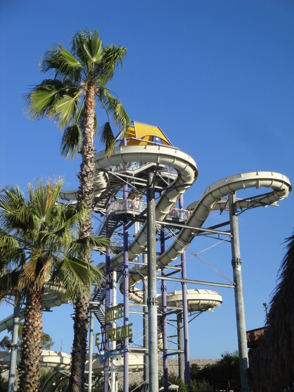
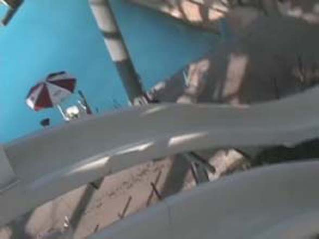
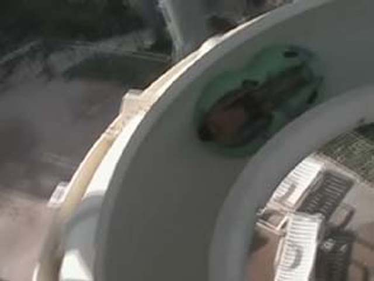
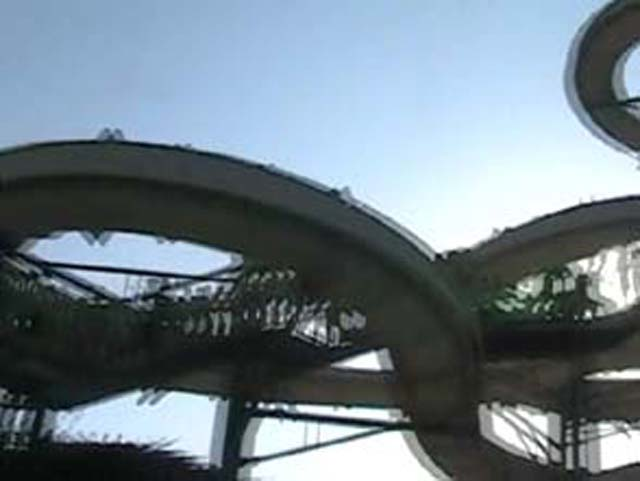
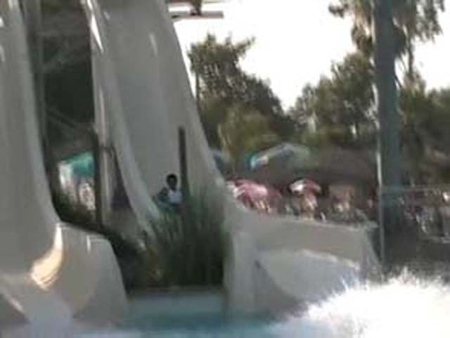
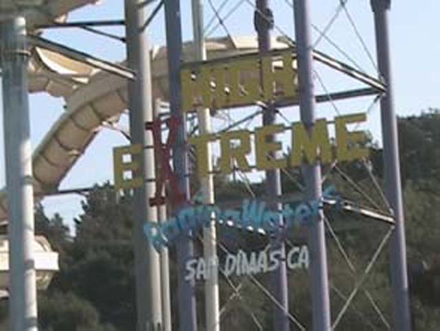

| |
High Extreme Photos

We're here at Raging Waters, where we'll be reveiwing High Extreme. First you get in line for your mat. Then you climb up that huge flight of stairs. Eventually, you're off to go! The slide at first doesn't have too much speed to it. But once you head down one of the drops, then you start to have fun. It's not nearly as intimidating as it looks, but it's still a fun waterslide with some decent speed. Then after some drops and turns, you make it down the final drop. This drop is actually awesome due to the speed you gain going down it. But now you landed in the pool. Back in 2005, this ride was a peice of sh*t. But I think what made it good was the switch to using mats. That made it go a lot faster than tubes for some reason. I'd recommend riding High Extreme if the line isn't too long.
7/10
Location: Raging Waters
Opened: I honestly don't know
Built by: I honestly don't know.
Last Ridden: August 22, 2021
High Extreme Photos









|